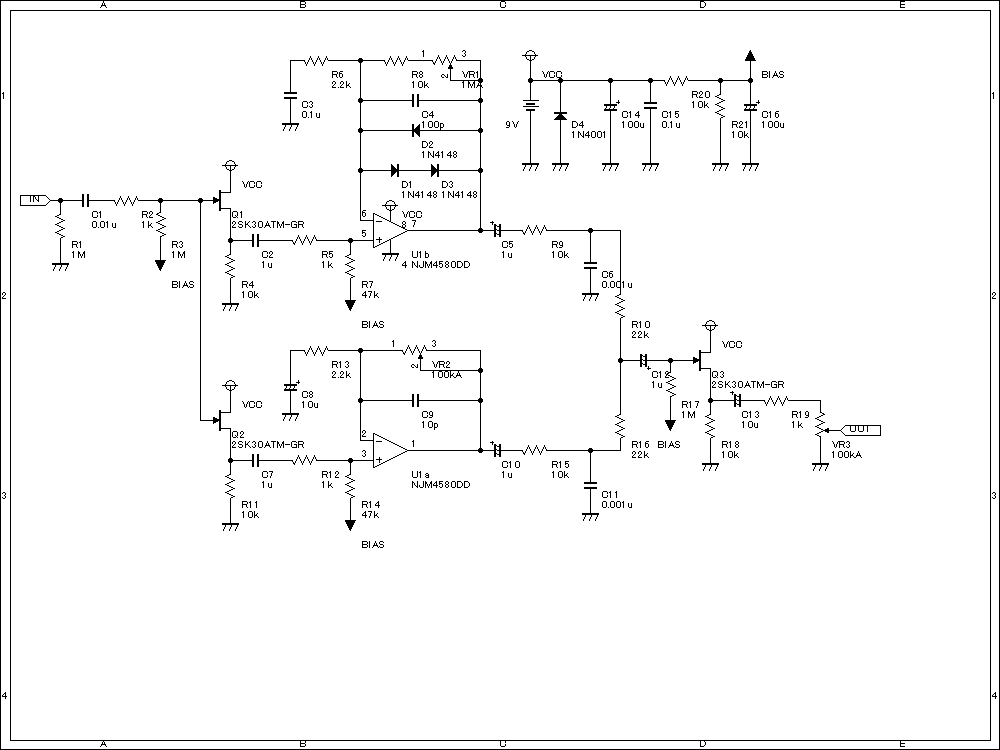

POTION（JAM＋ひよこのページ ミニブースター）
2007年12月02日 カテゴリー：自作エフェクター（アナログ）
JAMを作り直してひよこのページのミニブースターを前にくっつけました。ケースはMXRサイズより一回り大きいやつです。
▽回路図

▽レイアウト
今回はクリーンと歪みを別のポットで調整してブレンドするようにしました。クリッピングは2SK30ATMのダイオード接続を非対称にしてます。
回路としてはありきたりな感じですが、ブレンドの効果はかなりあります。歪ませてもクリーンを混ぜることで足りない低域を補ったりできます。ブースターはソロ時に使ってもいいしゲインを補うために常にかけてもOKです。結構幅広く使えそうなペダルになりました。
写真ではどうもシールの黒が薄くて青みたいに見えてます…ホントはもっと黒いです（いいわけ）。ポットを横に出すと踏むとき気にしなくていいので良いです。